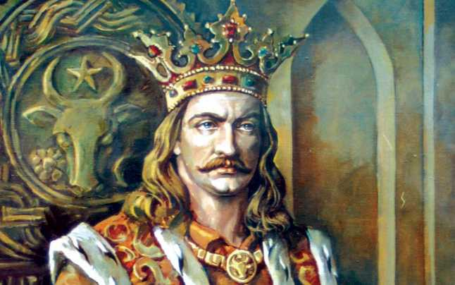
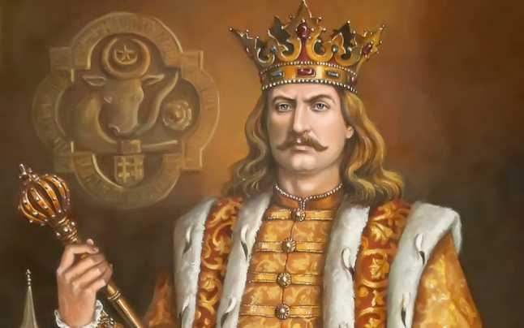

Domnia lui Stefan cel Mare
 
Ştefan cel Mare, fiul lui Bogdan al II-lea (1449-1451) şi
al soţiei sale Oltea, s-a născut cel mai probabil în anul 1438.
După moartea tatălui său, Ştefan s-a refugiat în Transilvania
stăpânită de către Iancu de Hunedoara (1441-1456), unde s-a
familiarizat cu tacticile militare ale acestuia, care îmbinau
elemente de artă militară din estul, centrul şi apusul Europei. Cu
o forţă militară pusă la dispoziţie de către Vlad Ţepeş (1448;
1456-1472; 1476), la care s-au adăugat partizanii săi din sudul
Moldovei, Ştefan cel Mare l-a învins pe Petru Aron la Doljeşti (Dolheşti), cucerind tronul Moldovei
pe data de 12 aprilie 1457. A găsit o ţară sărăcită, sfâşiată de luptele dintre diverşii pretendenţi la
domnia Moldovei, o ţară ce plătea tribut turcilor începând cu anul 1456.
Conform tradiției, Ștefan cel Mare s-a născut la moșia tatălui său de la Borzești, ca fiu nelegitim
al viitorului domn al Moldovei, Bogdan al II-lea și al Oltei. Bogdan era la rândul său fiu nelegitim al lui
Alexandru cel Bun, iar soția sa, Oltea provenea dintr-o familie de boieri de lângă Bacău, cei doi cunoscându-se
în perioada în care Bogdan s-a aflat în exil la curtea lui Vlad Dracul. Familia a mai avut încă trei băieți: Ioachim,
Ion și Crâstea și două fete: Maria și Sora.
Data nașterii nu este cunoscută cu certitudine, cele mai plauzibile variante fiind anii 1438 sau 1439.
Despre copilăria lui Ștefan cel Mare nu sunt date cunoscute, cel mai probabil acesta și-a petrecut-o la reședința familiei.
La 11 februarie 1450, Bogdan emite în „târgul de jos” — Roman — un hrisov de
recunoaștere a suzeranității lui Iancu de Hunedoara, căruia îi făgăduiește sprijin și ajutor, în orice
împrejurare, pentru ca în schimb „iubitul nostru părinte să ne ocrotească sub mâna sa și să ne apere
de orice dușmani ai noștri”. La sfârșitul actului, unde sunt enumerați martorii care girau acel
document este menționată, imediat după domn credința iubitului meu fiu, Ștefan Voevod. Actul
reprezintă prima atestare documentară a viitorului domn al Moldovei. Din menționarea de către tatăl
său ca asociat la domnie, rezultă că Ștefan împlinise în 1450 cel puțin unsprezece ani, vârsta
minimă impusă de cutumele vremii pentru o astfel de demnitate.
Bogdan avea să fie asasinat , la 15 octombrie 1451, la Reuseni , de către fratele său vitreg
Petru, alt fiu nelegitim al lui Alexandru cel Bun și care va domni ulterior sub numele de Petru
Aron . Cronicarul polonez Jan Długosz relata astfel scena:
„Un oarecare Petru, care pretindea că are drept la domnia Moldovei și se înțelesese cu
Alexandru ca să împărțească toate deopotrivă, alegând prilejul când Bogdan, poftit la țară, la un
unchi de frate al aceluiași Petru, era beat, pe o noapte urâtă, sosind numai cu o sută de moldoveni,
înșelă străjile lui Bogdan și, prinzându-l, îi tăie capul.”
După omorârea lui Bogdan, familia sa, inclusiv tânărul Ștefan vor pleca
în exil în Transilvania și apoi în Țara Românească, după instalarea ca domn a lui Vlad
Țepeș. Mama sa, Oltea avea să moară la 4 noiembrie 1465.
Ștefan cel Mare a fost căsătorit de trei ori. Dacă predecesorii săi încercaseră prin căsătorii și
alianțe matrimoniale să se apropie de suzeranii lor catolici, regii Ungariei și Poloniei, politica
dinastică a lui Ștefan cel Mare privind căsătoriile a fost diferită - după cum remarca istoricul P. P.
Panaitescu - toate trei soțiile lui sunt principese ortodoxe din țări vecine: Evdochia, fiica lui Simeon
Olelkovici de la Kiev, Maria din Paleologii de la Mangup, în Crimeea, Maria, fiica lui Radu cel
Frumos din Țara Românească.
Căsătoria cu Evdochia a avut loc la 5 iulie 1463 când, după cum scrie Grigore
Ureche , luatu-s-au doamnă de mare rudă, pre Evdochiia de la Chiev, sora lui Simeon Împăratul.
Iară cronicariul cel leșescu scrie că au fostu Evdochiia fată lui Simeon Împăratul, iară nu
soră. Căsătoria a durat doar patru ani. Din această căsătorie au rezultat doi băieți și o fată.
Băieții, Bogdan-Vlad născut în 1466 și Petru născut în 1467, au murit amândoi de tineri în anul
1479, la câteva luni distanță, fiind îngropați împreună în același mormânt. Fata, Elena, avea să se
mărite cu fiul țarului Ivan al III-lea al Rusiei. Evdochia moare și ea în 1467, posibil la nașterea lui
Petru, fiind înmormântată în Biserica Mirăuți din Suceava.
Ștefan a avut și un număr de concubine, cea mai cunoscută fiind Maria Rareș din Hârlău ,
mama viitorului domn Petru Rareș . Un alt posibil fiu nelegitim, a cărui mamă nu este cunoscută, a
fost viitorul domn Ștefan Lăcustă .
Ștefan cel Mare a murit la 2 iulie 1504 în urma infectării unei răni mai vechi, fiind
înmormântat la Mănăstirea Putna .
Cine a fost Ștefan cel Mare?
În toamna anului 1449, tatăl său, Bogdan sprijinit cu
un corp de oaste trimis de Iancu de Hunedoara , învinge
armata lui Alexandru al II-lea la Tămășeni , lângă apa
Moldovei, la 12 octombrie 1449 și se proclamă domn. Alexandru se refugiază în Transilvania, de
unde va încerca să își recapete tronul. La rândul său, Bogdan, după o încercare nereușită de a căpăta
sprijinul și protecția polonezilor, și-a îndreptat eforturile diplomatice către Ungaria.
Jan Długosz, Historiae Polonicae